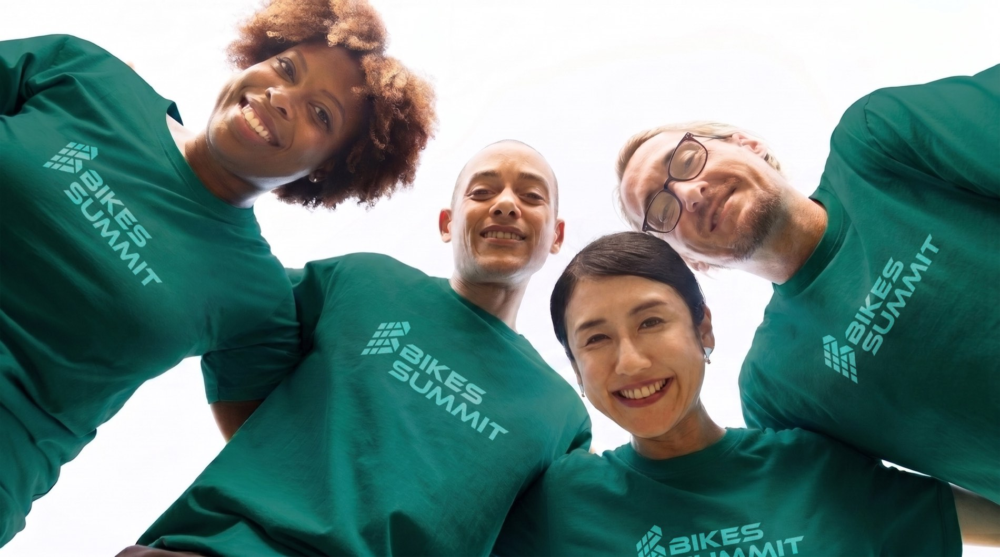

Voluntários
Faça parte da equipa que dá vida à primeira Bikes Summit. Viva o evento por dentro, conheça pessoas e ajude a construir o futuro da mobilidade.
Viva a Cimeira por dentro.
Ser voluntário na Bikes Summit é mais do que ajudar — é fazer parte da comunidade, ganhar experiência e viver o evento de um lugar único.
Nos bastidores
Viva a Cimeira de dentro, junto da organização, oradores e expositores.
Passe & kit
Acesso ao programa nos períodos livres e kit exclusivo de voluntário.
Certificado
Certificado de participação que valoriza o seu percurso e currículo.
Formação
Uma sessão de preparação antes do evento, para chegar a postos com confiança.
Networking
Conheça profissionais do setor, decisores e uma comunidade apaixonada.
Comunidade
Faça amizades e junte-se a uma rede que se mantém para além do evento.
O que precisas de saber.
Alguns pontos importantes antes de avançar. Ao inscrever-se, assume que reúne estas condições.
- Ter 18 anos ou mais à data do evento.
- Disponibilidade para 9 e 10 de Abril de 2027, e para a sessão de formação prévia.
- Boa capacidade de comunicação; o inglês é uma mais-valia (evento internacional).
- Espírito de equipa, sentido de responsabilidade e boa disposição.
- Gosto pela bicicleta e pela mobilidade sustentável — o mais importante!
Junte-se à equipa.
Deixe os seus dados e a nossa equipa entra em contacto com os próximos passos e as funções disponíveis.
- ◆ Inscrição gratuita
- ◆ Várias funções e horários
- ◆ Seleção comunicada por email